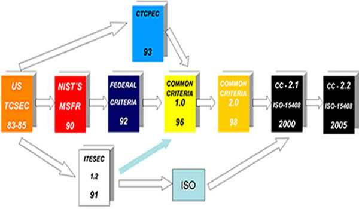
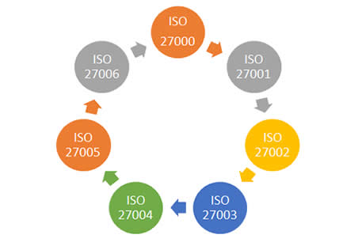
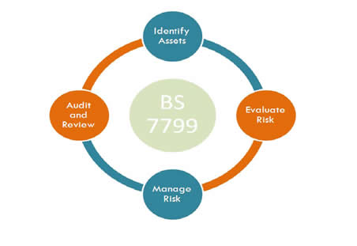

Cordial saludo, en la presente sección vamos a hablar sobre los diferentes estándares y modelos internacionales de seguridad informática (ISO 17799, TCSEC, ISO 15408, ISO 27000, BS7799 )
¿Qué es un estándar?
Se puede definir como un patrón, modelo o conjunto de normas a seguir. En ese sentido, Los estándares de seguridad son una herramienta que apoya la gestión de la seguridad informática.
Existen distintos modelos aplicables como:
Estándar de seguridad ISO 17799:
El estándar de seguridad de la información ISO 17799, es descendiente del BS 7799 – Information Security Management Standard – de la BSI (British Standard Institute) que publicó su primera versión en Inglaterra en 1995, con actualizaciones realizadas en 1998 y 1999, consiste de dos partes:
- Parte 1. Código de prácticas.
- Parte 2. Especificaciones del sistema de administración de seguridad de la información.
Por la necesidad generalizada de contar con un estándar de carácter internacional que permitiera reconocer o validar el marco de referencia de seguridad aplicado por las organizaciones, se elaboró el estándar ISO17799:2000, basado principalmente en la primera parte del BS 7799 conocida como Código de Prácticas (BS 7799 Part 1: Code of Practice). El ISO 17799, al definirse como una guía en la implementación del sistema de administración de la seguridad de la información, se orienta a preservar los siguientes principios de la seguridad informática:
- Confidencialidad. Asegurar que únicamente personal autorizado tenga acceso a la información.
- Integridad. Garantizar que la información no será alterada, eliminada o destruida por entidades no autorizadas.
- Disponibilidad. Asegurar que los usuarios autorizados tendrán acceso a la información cuando la requieran.
Estos principios en la protección de los activos de información constituyen las normas básicas deseables en cualquier organización, sean instituciones de gobierno, educativas e investigación; no obstante, dependiendo de la naturaleza y metas de las organizaciones, éstas mostrarán especial énfasis en algún dominio o área del estándar ISO 17799.
Los controles del ISO 17799:
El éxito de la implementación del estándar de seguridad ISO 17799 requiere de una serie de procedimientos donde, inicialmente, el análisis de riesgos identificará los activos de la información y las amenazas a las cuales se encuentra expuesta.
El análisis de riesgos guiará en la correcta selección de los controles que apliquen a la organización; este proceso se conoce en la jerga del estándar como Statement of Applicability, que es la definición de los controles que aplican a la organización con objeto de proporcionar niveles prácticos de seguridad de la información y medir el cumplimiento de los mismos. A continuación, se describirán cada una de las diez áreas de seguridad con el objeto de esclarecer los objetivos de estos controles.
- Políticas de seguridad: El estándar define como obligatorias las políticas de seguridad documentadas y procedimientos internos de la organización que permitan su actualización y revisión por parte de un Comité de Seguridad.
- Seguridad organizacional: Establece el marco formal de seguridad que debe integrar una organización, tales como un foro de administración de la seguridad de la información, un contacto oficial de seguridad (Information System Security Officer – ISSO), revisiones externas a la infraestructura de seguridad y controles a los servicios de outsourcing, entre otros aspectos.
- Clasificación y control de activos. El análisis de riesgos generará el inventario de activos que deberá ser administrado y controlado con base en ciertos criterios de clasificación y etiquetado de información, es decir, los activos serán etiquetados de acuerdo con su nivel de confidencialidad.
- Seguridad del personal. Proporcionar controles a las acciones del personal que opera con los activos de información.
- Seguridad física y de entorno. Identificar los perímetros de seguridad, de forma que se puedan establecer controles en el manejo de equipos, transferencia de información y control de los accesos a las distintas áreas con base en el tipo de seguridad establecida.
- Comunicaciones y administración de operaciones. Integrar los procedimientos de operación de la infraestructura tecnológica y de controles de seguridad documentados, que van desde el control de cambios en la configuración de los equipos, manejo de incidentes, administración de aceptación de sistemas, hasta el control de código malicioso.
- Control de acceso. Habilitar los mecanismos que permitan monitorear el acceso a los activos de información, que incluyen los procedimientos de administración de usuarios, definición de responsabilidades o perfiles de seguridad y el control de acceso a las aplicaciones.
- Desarrollo de sistemas y mantenimiento. La organización debe disponer de procedimientos que garanticen la calidad y seguridad de los sistemas desarrollados para tareas específicas de la organización.
- Continuidad de las operaciones de la organización. El sistema de administración de la seguridad debe integrar los procedimientos de recuperación en caso de contingencias, los cuales deberán ser revisados de manera constante y puestos a prueba con la finalidad de determinar las limitaciones de los mismos.
- Requerimientos legales. La organización establecerá los requerimientos de seguridad que deben cumplir todos sus proveedores, socios y usuarios; éstos se encontrarán formalizados en los contratos o convenios.
El objetivo de esta área del estándar es contar con los elementos necesarios para mitigar el riesgo inherente a la interacción humana, es decir, establecer claras responsabilidades por parte del personal en materia de seguridad de la información.
Cada una de las áreas establece una serie de controles que serán seleccionados dependiendo de los resultados obtenidos en el análisis de riesgos, además, existen controles obligatorios para toda organización, como es el de las políticas de seguridad cuyo número dependerá más de la organización que del estándar, el cual no establece este nivel de detalle.
Estándar Trusted Computer Security Evaluation Criteria (TCSEC)
El Departamento de Defensa de los Estados Unidos por los años 80’s (1983-1985) publica una serie de documentos denominados Serie Arco iris (Rainbow Series). Dentro de esta serie se encuentra el Libro Naranja (Orange Book) el cual suministra especificaciones de seguridad. Se definen siete conjuntos de criterios de evaluación denominados clases (D, C1, C2, B1, B2, B3 y A1). Cada clase de criterios cubre cuatro aspectos de la evaluación: política de seguridad, imputabilidad, aseguramiento y documentación. Los criterios correspondientes a estas cuatro áreas van ganando en detalle de una clase a otra, constituyendo una jerarquía en la que D es el nivel más bajo y A1 él más elevado. Todas las clases incluyen requisitos tanto de funcionalidad como de confianza.

- Nivel D (Protección mínima): Sin seguridad, está reservada para sistemas que han sido evaluados y no cumplen con ninguna especificación de seguridad.
- Nivel C1 (Protección Discrecional): Se requiere identificación de usuarios que permite el acceso a distinta información. Cada usuario puede manejar su información privada y se hace la distinción entre los usuarios y el administrador del sistema, quien tiene control total de acceso.
- Nivel C2 (Protección de Acceso Controlado): Este nivel fue diseñado para solucionar las debilidades del C1. Cuenta con características adicionales que crean un ambiente de acceso controlado. Se debe llevar una auditoria de accesos e intentos fallidos de acceso a objetos. Tiene la capacidad de restringir aún más el que los usuarios ejecuten ciertos comandos o tengan acceso a ciertos archivos, permitir o denegar datos a usuarios en concreto, con base no sólo en los permisos, sino también en los niveles de autorización.
- Nivel B1 (Seguridad Etiquetada): Soporta seguridad multinivel, como la secreta y ultra secreta. Se establece que el dueño del archivo no puede modificar los permisos de un objeto que está bajo control de acceso obligatorio.
- Nivel B2 (Protección Estructurada): La Protección Estructurada es la primera que empieza a referirse al problema de un objeto a un nivel más elevado de seguridad en comunicación con otro objeto a un nivel inferior. Así, un disco rígido será etiquetado por almacenar archivos que son accedidos por distintos usuarios.
- Nivel B3 (Dominios de seguridad): Este nivel requiere que la Terminal del usuario se conecte al sistema por medio de una conexión segura. Además, cada usuario tiene asignado los lugares y objetos a los que puede acceder.
- Nivel A1 (Protección verificada): Es el nivel más elevado, incluye un proceso de diseño, control y verificación, mediante métodos formales (matemáticos) para asegurar todos los procesos que realiza un usuario sobre el sistema.
Muchas de las tareas cotidianas de administración del sistema sólo pueden ser realizadas por este "súper usuario"; quien tiene gran responsabilidad en la seguridad del mismo. Con la actual descentralización de los sistemas de cómputos, no es raro que en una organización encontremos dos o tres personas cumpliendo este rol. Esto es un problema, debido a que no hay forma de distinguir entre los cambios que hizo cada usuario.
Requiere que se audite el sistema. Esta auditoria es utilizada para llevar registros de todas las acciones relacionadas con la seguridad, como las actividades efectuadas por el administrador del sistema y sus usuarios.
La auditoría requiere de autenticación adicional para estar seguros de que la persona que ejecuta el comando es quien dice ser. Su mayor desventaja reside en los recursos adicionales requeridos por el procesador y el subsistema de discos.
Los usuarios de un sistema C2 tienen la autorización para realizar algunas tareas de administración del sistema sin necesidad de ser administradores.
A cada objeto del sistema (usuario, dato, etc.) se le asigna una etiqueta, con un nivel de seguridad jerárquico (alto secreto, secreto, reservado, etc.) y con unas categorías (contabilidad, nóminas, ventas, etc.).
Cada usuario que accede a un objeto debe poseer un permiso expreso para hacerlo y viceversa. Es decir que cada usuario tiene sus objetos asociados.
También se establecen controles para limitar la propagación de derecho de accesos a los distintos objetos.
El sistema es capaz de alertar a los usuarios si sus condiciones de accesibilidad y seguridad son modificadas; y el administrador es el encargado de fijar los canales de almacenamiento y ancho de banda a utilizar por los demás usuarios.
Existe un monitor de referencia que recibe las peticiones de acceso de cada usuario y las permite o las deniega según las políticas de acceso que se hayan definido.
Todas las estructuras de seguridad deben ser lo suficientemente pequeñas como para permitir análisis y pruebas ante posibles violaciones.
Para llegar a este nivel de seguridad, todos los componentes de los niveles inferiores deben incluirse. El diseño requiere ser verificado de forma matemática y también se deben realizar análisis de canales encubiertos y de distribución confiable. El software y el hardware son protegidos para evitar infiltraciones ante traslados o movimientos del equipamiento.
Estándar ISO 15408 Criterios Comunes (CC)
Los CC (Criterios Comunes) su primer versión surgió en el 96, pero Europa paralelamente trabajó en un estándar ISO, esto nos regresaba al problema original, tener criterios diferentes de seguridad dependiendo del continente en el que se encontrará; para el año 2000 se unificaron criterios nuevamente dando lugar a un estándar internacional que puede ser conocido con el nombre de Common Criteria o ISO-15408.
En el año del 2005 se actualizaron los CC dando origen a CC versión 2.2 también conocido como ISO-15408:2005

Imagen tomada de: http://redyseguridad.fi-p.unam.mx/proyectos/seguridad/CC.php
Pero, ¿porque son tan importantes los CC en la Seguridad de la Información (SI)?. En principio es un estándar internacional aceptado por una gran cantidad de países como son: Canadá, Francia, Alemania, Reino Unido, Estados Unidos, Australia, Nueva Zelanda, Finlandia, Grecia, Italia, Holanda, Noruega, España.
Los CC nos ofrecen una norma internacional para evaluar la seguridad de los productos de tecnología de la información. Se puede pensar en tres diferentes perspectivas desde las cuales los podemos abordar: Como consumidores proveen criterios que determinan las necesidades de seguridad que deben cumplir los productos que se deseen adquirir.
Como desarrolladores proveen criterios que permite cubrir requerimientos de seguridad en diferentes niveles.
Como evaluadores proporcionan los productos de seguridad que deben ser cubiertos por los desarrolladores.
Los CC están divididos en 3 partes: Introducción y Modelo General, Requerimientos Funcionales, Requerimientos de Garantía.
A veces se tiene la idea de que no es bueno utilizar CC para implementar un esquema de seguridad, porque se piensa que no son certificables debido a que son muy generales. Por esta razón se usan estándares como pueden ser el ISO-17799 o el ISO-27000.
Estándar ISO 27000
ISO/IEC 27000 es un conjunto de estándares desarrollados -o en fase de desarrollo- por ISO (International Organization for Standardization) e IEC (International Electrotechnical Commission), que proporcionan un marco de gestión de la seguridad de la información utilizable por cualquier tipo de organización, pública o privada, grande o pequeña.
El ISO-27000 se basa en la segunda parte del estándar británico BS7799 (BS7799:2). Está compuesta a grandes rasgos por:
- ISMS(Information Security Management System).
- Valoración de Riesgo.
- Controles.

A semejanza de otras normas ISO, la 27000 es realmente una serie de estándares.
- ISO 27000: En fase de desarrollo. Contendrá términos y definiciones que se emplean en toda la serie 27000. La aplicación de cualquier estándar necesita de un vocabulario claramente definido, que evite distintas interpretaciones de conceptos técnicos y de gestión. Esta norma será gratuita, a diferencia de las demás de la serie, que tendrán un coste.
- ISO 27001: Es la norma principal de requisitos del sistema de gestión de seguridad de la información. Tiene su origen en la BS 7799-2:2002 y es la norma con arreglo a la cual se certifican por auditores externos los SGSI de las organizaciones. Fue publicada el 15 de Octubre de 2005 y sustituye a la BS 7799-2, habiéndose establecido unas condiciones de transición para aquellas empresas certificadas en esta última.
- En su Anexo A, enumera en forma de resumen los objetivos de control y controles que desarrolla la ISO 27002:2005 (nueva numeración de ISO 17799:2005 desde el 1 de Julio de 2007), para que sean seleccionados por las organizaciones en el desarrollo de sus SGSI; a pesar de no ser obligatoria la implementación de todos los controles enumerados en dicho anexo, la organización deberá argumentar sólidamente la no aplicabilidad de los controles no implementados.
- ISO 27002: Cambio de nomenclatura de ISO 17799:2005 realizada el 1 de Julio de 2007. Es una guía de buenas prácticas que describe los objetivos de control y controles recomendables en cuanto a seguridad de la información. No es certificable. Contiene 39 objetivos de control y 133 controles, agrupados en 11 dominios.
- ISO 27003: En fase de desarrollo; probable publicación a finales de 2008. Contendrá una guía de implementación de SGSI e información acerca del uso del modelo PDCA y de los requerimientos de sus diferentes fases. Tiene su origen en el anexo B de la norma BS7799-2 y en la serie de documentos publicados por BSI a lo largo de los años con recomendaciones y guías de implantación.
- ISO 27004: En fase de desarrollo; probable publicación a lo largo de 2008. Especificará las métricas y las técnicas de medida aplicables para determinar la eficacia de un SGSI y de los controles relacionados. Estas métricas se usan fundamentalmente para la medición de los componentes de la fase “Do” (Implementar y Utilizar) del ciclo PDCA.
- ISO 27005: En fase de desarrollo; probable publicación a finales de 2007 ó principios de 2008. Consistirá en una guía para la gestión del riesgo de la seguridad de la información y servirá, por tanto, de apoyo a la ISO27001 y a la implantación de un SGSI. Se basará en la BS7799-3 (publicada en Marzo de 2006) e ISO 13335-3.
- ISO 27006: Publicada en Febrero de 2007. Especifica los requisitos para la acreditación de entidades de auditoría y certificación de sistemas de gestión de seguridad de la información.
Estándar BS 7799 (Reino Unido)

Imagen tomada de: http://www.qminds.co.in/images/
Desde 1901, y como primera entidad de normalización a nivel mundial, BSI (British Standards Institution, la organización inglesa equivalente a AENOR en España) es responsable de la publicación de importantes normas como:
- 1979 Publicación BS 5750 - ahora ISO 9001
- 1992 Publicación BS 7750 - ahora ISO 14001
- 1996 Publicación BS 8800 - ahora OHSAS 18001
La norma BS 7799 de BSI aparece por primera vez en 1995, con objeto de proporcionar a cualquier empresa -británica o no- un conjunto de buenas prácticas para la gestión de la seguridad de su información.
El estándar británico BS 7799 es un estándar aceptado ampliamente que ha sido utilizado como base para elaborar otros estándares de seguridad de la información incluyendo el ISO 17799.
La versión actual de estándar tiene dos partes:
BS7799-1:1999 Information Security Management. Code of Practice for Information Security Management. Es la guía de buenas prácticas, para la que no se establece un modelo de certificación.
BS7799-2:1999 Information Security Management. Specification for Information Security Management Systems. Establece los requisitos de un sistema de seguridad de la información (SGSI) para ser certificable por una entidad independiente.